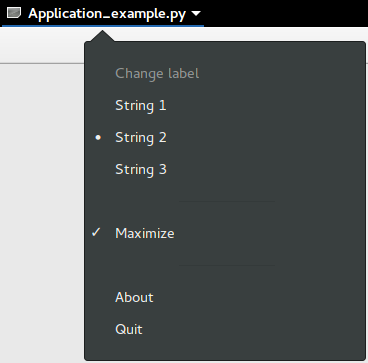

22. Aplicação¶
Gtk.Application abrange muitas tarefas repetitivas que um aplicativo moderno precisa, como manipular várias instâncias, ativação do D-Bus, abertura de arquivos, análise de linha de comando, inicialização/desligamento, gerenciamento de menus, gerenciamento de janelas e muito mais.
22.1. Ações¶
Gio.Action é uma maneira de expor qualquer tarefa que seu aplicativo ou widget fizer por um nome. Essas ações podem ser desabilitadas/habilitadas no tempo de execução e podem ser ativadas ou ter um estado alterado (se elas contiverem estado).
O motivo para usar ações é separar a lógica da interface do usuário. Por exemplo, isso permite usar uma barra de menu no OSX e um menu de engrenagem no GNOME, simplesmente referenciando o nome de uma ação. A principal implementação que você estará usando é Gio.SimpleAction que será mostrado mais tarde.
Muitas classes, como Gio.MenuItem e Gtk.ModelButton suportam propriedades para definir um nome de ação.
Estas ações podem ser agrupadas em um Gio.ActionGroup e quando esses grupos são adicionados a um widget com Gtk.Widget.insert_action_group(), eles ganharão um prefixo. Tal como “win” quando adicionado a um Gtk.ApplicationWindow. Você usará o nome completo da ação ao fazer referência a ele, como “app.about”, mas ao criar a ação, ela ficará “about” até ser adicionada ao aplicativo.
Você também pode facilmente criar keybindings para ações definindo a propriedade accel no arquivo Gio.Menu ou usando Gtk.Application.add_accelerator().
22.3. Linha de Comando¶
Ao criar seu aplicativo, ele recebe uma propriedade de flag de Gio.ApplicationFlags. Usando isso, você pode permitir que ele manipule tudo sozinho ou tenha um comportamento mais personalizado.
Você pode usar o HANDLES_COMMAND_LINE para permitir um comportamento customizado em Gio.Application.do_command_line(). Em combinação com Gio.Application.add_main_option() para adicionar opções personalizadas.
Usar HANDLES_OPEN fará o trabalho de simplesmente pegar argumentos de arquivo para você e permitir que você os manipule em Gio.Application.do_open().
Se o seu aplicativo já estiver aberto, todos serão enviados para a instância existente, a menos que você use NON_UNIQUE para permitir várias instâncias.
22.4. Exemplo¶
1 2 3 4 5 6 7 8 9 10 11 12 13 14 15 16 17 18 19 20 21 22 23 24 25 26 27 28 29 30 31 32 33 34 35 36 37 38 39 40 41 42 43 44 45 46 47 48 49 50 51 52 53 54 55 56 57 58 59 60 61 62 63 64 65 66 67 68 69 70 71 72 73 74 75 76 77 78 79 80 81 82 83 84 85 86 87 88 89 90 91 92 93 94 95 96 97 98 99 100 101 102 103 104 105 106 107 108 109 110 111 112 113 114 115 116 117 118 119 120 121 122 123 124 125 126 127 128 129 130 131 132 133 134 135 136 137 138 139 140 141 142 | import sys
import gi
gi.require_version('Gtk', '3.0')
from gi.repository import GLib, Gio, Gtk
# This would typically be its own file
MENU_XML="""
<?xml version="1.0" encoding="UTF-8"?>
<interface>
<menu id="app-menu">
<section>
<attribute name="label" translatable="yes">Change label</attribute>
<item>
<attribute name="action">win.change_label</attribute>
<attribute name="target">String 1</attribute>
<attribute name="label" translatable="yes">String 1</attribute>
</item>
<item>
<attribute name="action">win.change_label</attribute>
<attribute name="target">String 2</attribute>
<attribute name="label" translatable="yes">String 2</attribute>
</item>
<item>
<attribute name="action">win.change_label</attribute>
<attribute name="target">String 3</attribute>
<attribute name="label" translatable="yes">String 3</attribute>
</item>
</section>
<section>
<item>
<attribute name="action">win.maximize</attribute>
<attribute name="label" translatable="yes">Maximize</attribute>
</item>
</section>
<section>
<item>
<attribute name="action">app.about</attribute>
<attribute name="label" translatable="yes">_About</attribute>
</item>
<item>
<attribute name="action">app.quit</attribute>
<attribute name="label" translatable="yes">_Quit</attribute>
<attribute name="accel"><Primary>q</attribute>
</item>
</section>
</menu>
</interface>
"""
class AppWindow(Gtk.ApplicationWindow):
def __init__(self, *args, **kwargs):
super().__init__(*args, **kwargs)
# This will be in the windows group and have the "win" prefix
max_action = Gio.SimpleAction.new_stateful("maximize", None,
GLib.Variant.new_boolean(False))
max_action.connect("change-state", self.on_maximize_toggle)
self.add_action(max_action)
# Keep it in sync with the actual state
self.connect("notify::is-maximized",
lambda obj, pspec: max_action.set_state(
GLib.Variant.new_boolean(obj.props.is_maximized)))
lbl_variant = GLib.Variant.new_string("String 1")
lbl_action = Gio.SimpleAction.new_stateful("change_label", lbl_variant.get_type(),
lbl_variant)
lbl_action.connect("change-state", self.on_change_label_state)
self.add_action(lbl_action)
self.label = Gtk.Label(label=lbl_variant.get_string(),
margin=30)
self.add(self.label)
self.label.show()
def on_change_label_state(self, action, value):
action.set_state(value)
self.label.set_text(value.get_string())
def on_maximize_toggle(self, action, value):
action.set_state(value)
if value.get_boolean():
self.maximize()
else:
self.unmaximize()
class Application(Gtk.Application):
def __init__(self, *args, **kwargs):
super().__init__(*args, application_id="org.example.myapp",
flags=Gio.ApplicationFlags.HANDLES_COMMAND_LINE,
**kwargs)
self.window = None
self.add_main_option("test", ord("t"), GLib.OptionFlags.NONE,
GLib.OptionArg.NONE, "Command line test", None)
def do_startup(self):
Gtk.Application.do_startup(self)
action = Gio.SimpleAction.new("about", None)
action.connect("activate", self.on_about)
self.add_action(action)
action = Gio.SimpleAction.new("quit", None)
action.connect("activate", self.on_quit)
self.add_action(action)
builder = Gtk.Builder.new_from_string(MENU_XML, -1)
self.set_app_menu(builder.get_object("app-menu"))
def do_activate(self):
# We only allow a single window and raise any existing ones
if not self.window:
# Windows are associated with the application
# when the last one is closed the application shuts down
self.window = AppWindow(application=self, title="Main Window")
self.window.present()
def do_command_line(self, command_line):
options = command_line.get_options_dict()
if options.contains("test"):
# This is printed on the main instance
print("Test argument recieved")
self.activate()
return 0
def on_about(self, action, param):
about_dialog = Gtk.AboutDialog(transient_for=self.window, modal=True)
about_dialog.present()
def on_quit(self, action, param):
self.quit()
if __name__ == "__main__":
app = Application()
app.run(sys.argv)
|